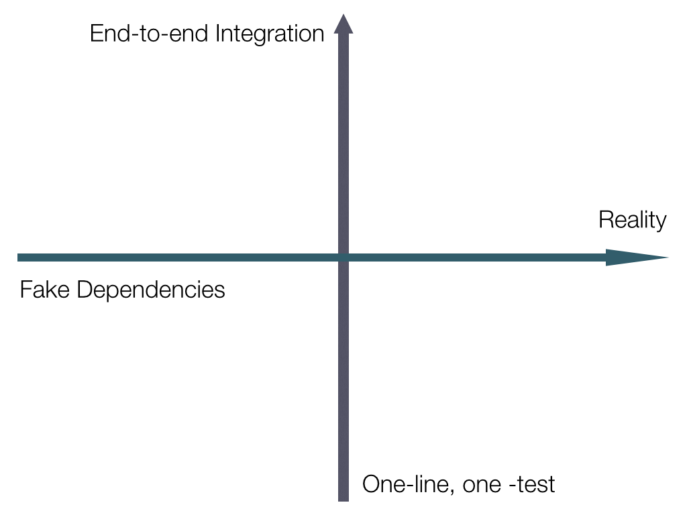
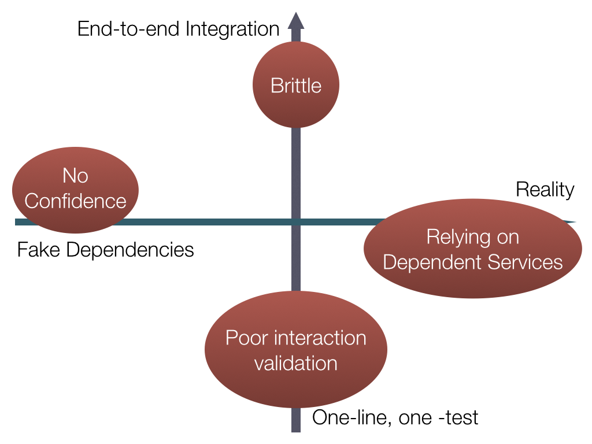
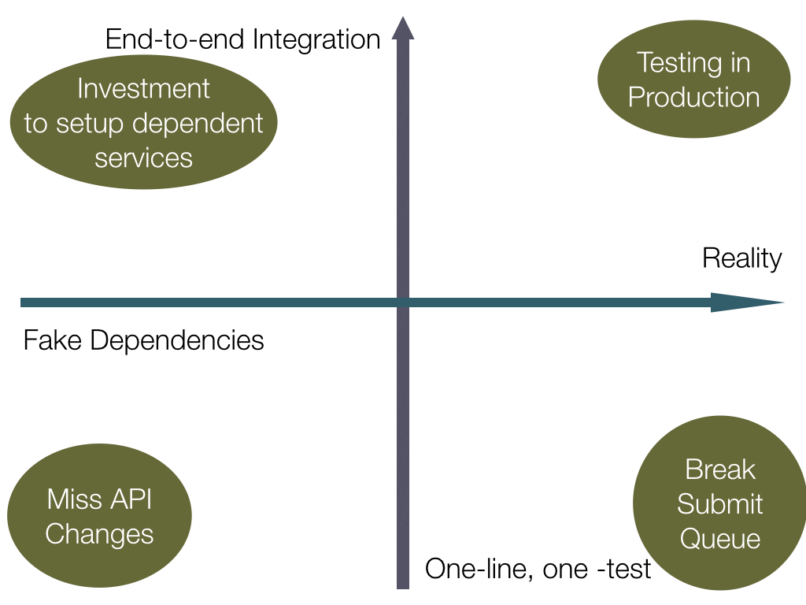
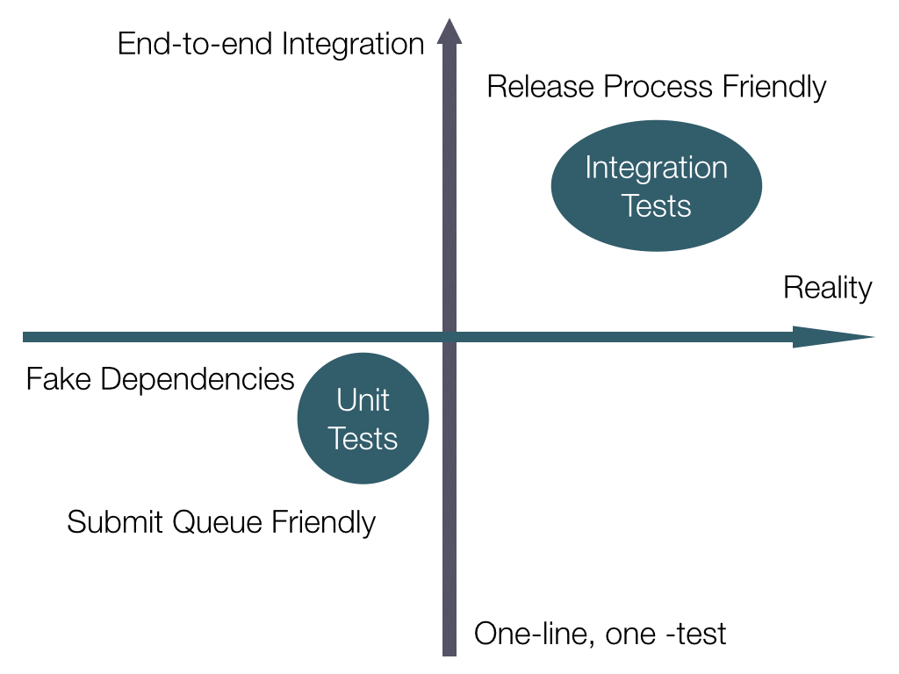

Axes of Testing
I've tried many different tacks when explaining the benefits of unit testing to other developers (and proving to myself that they are worth it). Tests are not a silver bullet, they are just another tool in your war chest, and certainly have their limitations. What follows is the best breakdown I've come up with to describe the various types of tests and when to lean on them. I presented this at a Twitter-internal Python tech talk, and many teammates nudged me to publish it externally. I hope it will allow others to understand how to approach adding different types of tests for your codebase.
The Spectrum of Testing
Big and Small, Real and Fake
Initially, I started using a single axis to try to delineate between "small" unit tests and "widely-scoped" integration tests. This wasn't effective, as I got lost when trying to figure out how to deal with moving away from real dependencies (sending prod traffic to other services) vs. making sure I replaced those interactions with mocks or fakes so I could still run my tests on an airplane.
This helped me realize that I was actually staring at (at least) a two dimensional spectrum, and thus the axes were born.
Axes

Horizontal
The first, horizontal axis covers whether or not you're sending traffic to live
production, or just mocked out services. If you run curl http://twitter.com,
then you're hitting Twitter's website. However, if you change
your /etc/hosts file to instead point that hostname to your localhost where
you're running a web server, then you've taken a step away from "production" and toward a
faked out twitter.com.
Vertical
The second, vertical axis is used to show the "size" of a test— how much of the system is
exercised when executed? Using that curl example above, that is a test that
sweeps the gamut of infrastructure. It ensures that the curl binary is
installed on your system, your machine is connected to the Internet (with DNS, etc.), but
also that Twitter's front-end infrastructure is serving correctly. This requires all of
those pieces to work, and an error in one component will cause a failure for the entire
test.
At the low end, you have a test which is akin to a shell script called ./curl
which just ensures you pass in http://twitter.com as the only argument. This
isolates your execution from all other variables than just the way you're calling
curl, but the downside is you're not really ensuring that you are using things
correctly. If, for instance, curl gets updated to change the way it takes a
URI for an argument, then you won't notice by running your test script, since it's not
actually invoking curl at all. Also, if (heaven forbid..)
twitter.com goes down or moves locations, you won't notice
that either.
Extremes
Let's take a look at what would happen if we just followed some of these options to the max

Brittle
If you are testing the whole end-to-end pipeline of a task, then a small break in any piece will grind your entire test to breakage. Large, broken test suites are tough to debug because you won't be able to tell which component is causing your failure without looking at the error message in detail.
Dependent Services
If you have a service which has zero mocks, and fully depends on all of production responding and working at all times, then it will break anytime there is an issue with any small piece. Many downstreams in a test can be difficult to keep running frequently and reliably without a ton of work to ensure they are all stable.
Interaction Validation
If you have very small-scoped tests, then you may miss huge interaction problems, and may not realize that you are sending the wrong format of data between various services, or perhaps are not rate-limiting the total number of requests (or any of an infinite number) of interactions.
No Confidence
If everything is mocked out, then you're spending all your effort on re-building infrastructure and pieces, without gaining any benefits of testing the actual systems you care about!
Worst of All Worlds
We can get even worse by blindly combining some of these ideas as well!

Testing In Production
If you want to ensure you're causing problems for your users, throw some additional monkey wrenches into the works. This isn't the same as Netflix's Chaos Monkey; I'm talking about throwing brand-new, un-vetted code into production so your customers detect the issues at the same time you do. Do not send huge request loads onto your brand new systems without even validating they pass health checks first!
Submit Queue
If you have many small tests that all hit various portions of live infrastructure, you will assuredly find lots of broken pieces over time. This will be a constant drag on productivity, as engineers will never quite know if the production service is having an issue or the code they just wrote is broken without investigation.
API Changes
If you have many, small tests and mock everything out, then you won't actually see what big interface changes happen between modules or services. This will lead you to writing a lot of tests that don't verify anything, and not prevent you from changing the wrong thing which breaks a big service and takes the site down.
Maintaining Mock Services
If you want to have an equally-staffed Testing Team who shadows your "primary" team of developers, then you can likely manage to build a "stack in a box" and build the massive fleet required to mock out all of your services and keep up with changes. Otherwise, probably not worth the time investment.
Unit Tests and Integration Tests
I believe that by taking a middle path between these extremes, we can come up with two groups of tests that will make developers lives much better.

Terminology
Unit Tests
These are tests that should be scoped relatively small, and rely on mocking any external service that makes a network call or IO of any kind. This allows these tests to be run after every commit (or after every change!) and ensure that the feedback loop is very tight. Even running a linter would be a small start, but code you write to validate your production code does what it should would be best.
Integration Tests
These are the larger, less frequently run tests. This would be part of a frequent release process, something that wasn't so frequent that it was expected to be run by developers multiple times per day, but not so infrequently that things change out from underneath it too frequently. This is something that could actually spin up dev instances of whatever services are necessary, and run through a battery of expected user behavior.
Conclusion
Between small and fast "unit tests" and larger, more comprehensive "integration tests" I have found that it enables teams to move more quickly and with confidence, even if those engineers are just dropping in with a quick bug fix. Comments and suggestions appreciated- feel free to mention me on Twitter!